2. 初探OpenShift容器云¶
在前面的章节我们一起探讨了容器云的概念以及OpenShift 容器云项目的情况。理论联系实际，为了对OpenShift容器云有更直接的认识，本章将会帮助你快速地在自己的个人电脑上搭建一个可用的OpenShift的环境，并在这个环境上运行我们的第一个容器应用。这里假设你对Linux 及Docker 已经有了基本的了解，并掌握了基本的使用命令。对Docker 不熟悉的读者，请参考dockone.io 的Docker 入门教程（ http://dockone.io/article/111 ） 。
2.1. 启动OpenShift¶
（略）
2.2. 运行第一个容器应用¶
OpenShift 服务成功启动后，现在可以尝试运行你的第一个容器应用了！
2.2.1. 创建项目¶
在部署应用前，先要为应用创建一个项目，即Project对象。项目是OpenShift中的一种资源组织方式。对一般用户而言，不同类型的相关资源、可以被归属到某一个项目中进行统一管理。对管理员来说，项目是配额管理和网络隔离的基本单位。
以dev 用户登录OpenShift 的Web 控制台。单击页面中的New Project 按钮创建一个新的项目。在创建项目页面输入项目名hello-world，展示名称填人Hello World。 单击Create 按钮创建项目，如图2-3 所示。
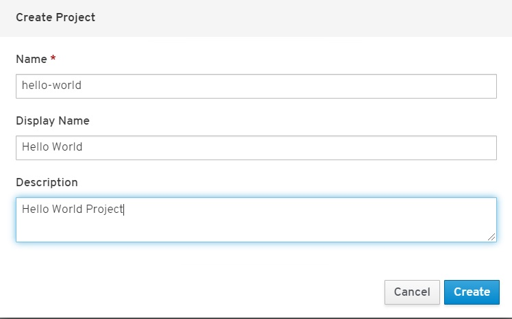图2-3 创建Hello World项目
2.2.2. 部署Docker 镜像¶
现在马上可以部署你的第一个容器应用了。前文曾介绍到OpenShift是以原生的Docker作为平台的容器引擎，因此只要是有效的Docker 镜像，均可以运行于OpenShift容器云平台之上。
Note
Docker默认允许容器以root 用户的身份执行容器内的程序。OpenShift对容器的安全比Docker 有更谨慎的态度。OpenShift 默认在启动容器应用时使用非root 用户。这可能会导致一些Docker 镜像在OpenShift平台上启动时报出Permission denied 的错误。别担心，其实只需要稍稍修改OpenShift 的安全配置，即可解决这个问题。具体修改我们会在后面的章节介绍。但是请记住，在制作自己的Docker 镜像时，建议避免使用root 用户启动容器内的应用，以降低安全风险。
下面在OpenShift 上运行Docker Hub上的hello-openshift 镜像。单击页面上的Deploy Image 按钮，如图2-4 所示。
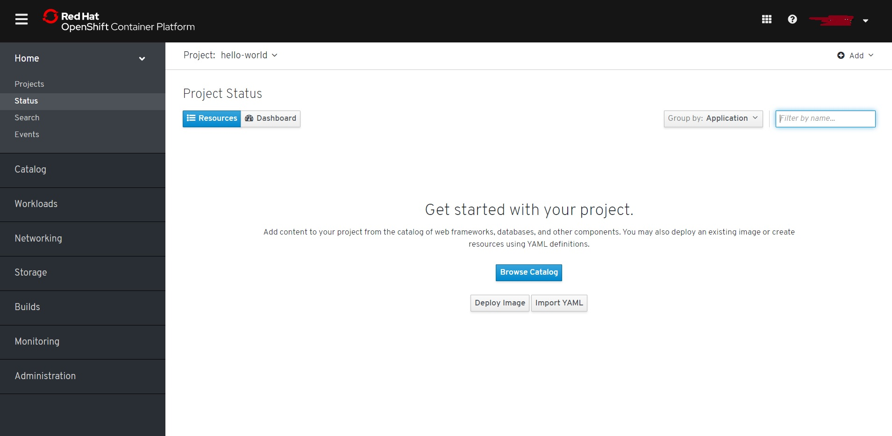图2-4 部署容器镜像
在部署镜像页面，输入镜像名称openshift/hello-openshift，然后单击放大镜按钮，如图2-5 所示。单击按钮后OpenShift 将根据输入的镜像名称在Docker Hub 及配置了的镜像仓库中查找该名称的容器镜像。
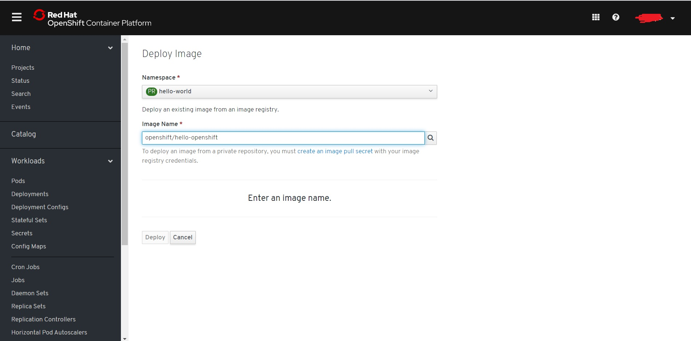图2-5 输入容器镜像名称
Note
请保证实验用的虚拟机能连接上互联网，以访问DockerHub 仓库下载所需镜像。
片刻之后， OpenShift 将找到我们指定的镜像，井加载镜像的信息。浏览信息后， 单击页面下方的Deploy 按钮进行部署，如图2-6 所示。此时OpenShift将会在后台创建部署此容器镜像的相关对象。
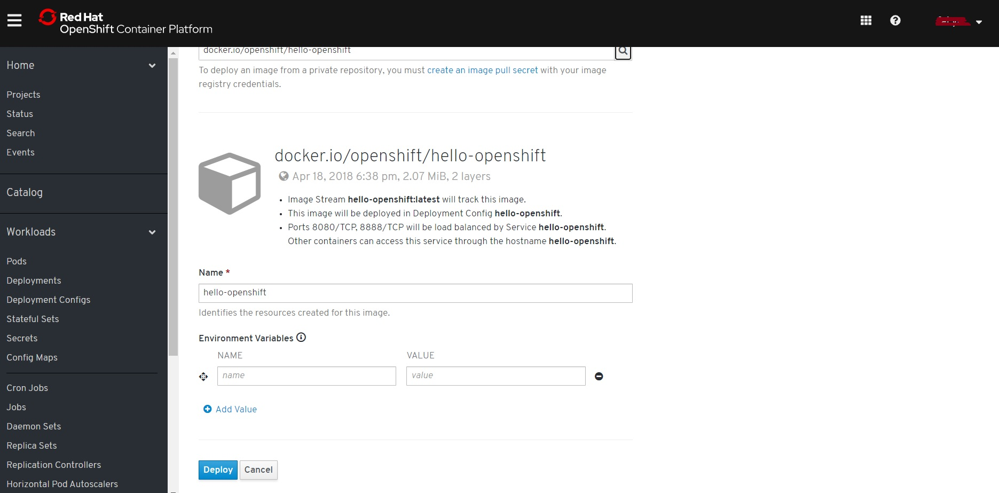图2-6 确认部署容器镜像
确认部署后，页面将转跳到Projct Status，如图2-7 所示。 单击页面上的hello-openshift链接, 页面右边会显示Hello World项目的DC(DeploymentConfig)的信息，如图2-8 所示。单击页面上的#1链接转跳到Hello World项目的ReplicationController Details页面，如图2-9 所示。
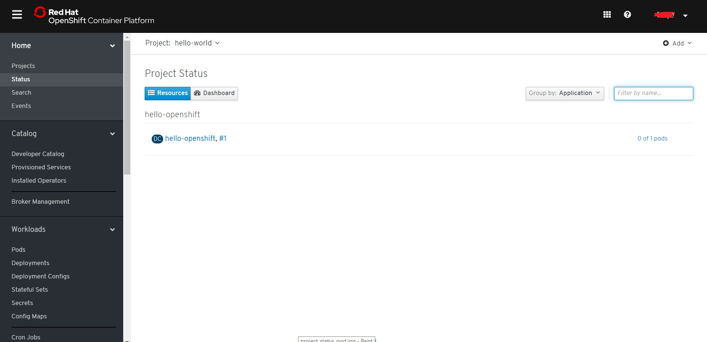图2-7 部署完成确认页面
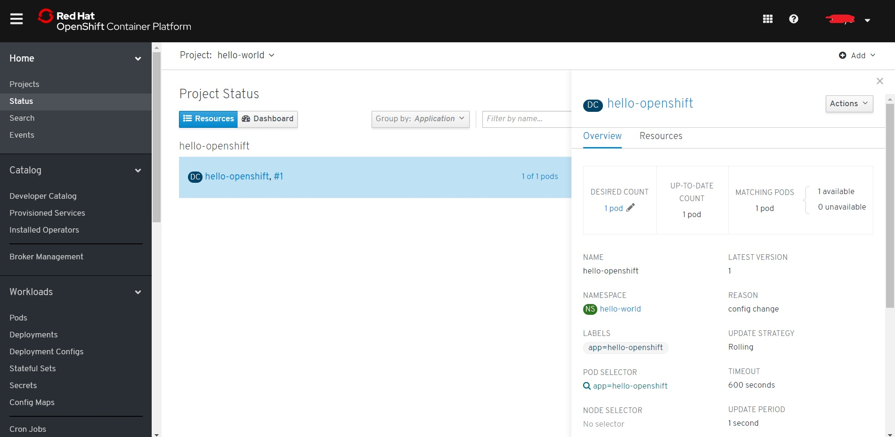图2-8 Hello World 项目Project Status页面
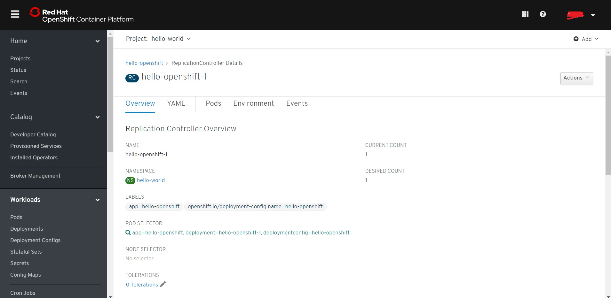图2-9 Hello World 项目ReplicationController Details页面
当第一次部署某个容器应用时，由于需要到DockerHub 上下载镜像文件，所以需要等待一定的时间。所需时间视实验主机所在网络的网速而定。如果在创建容器应用的过程中出现了Image Pull Error 的状态，可以尝试手工下载镜像。检查Docker 能否正常连接上Docker Hub 及其镜像站点。
docker pull docker.io/openshift/hello-openshift
稍等片刻后， hello-openshift 容器会成功启动。可以看到项目主页上的“0 of 1 pods”变成了“1 of 1 pods”。这说明容器已经成功启动了，当前有“1”个在运行的实例。
2.2.3. 访问容器应用¶
容器启动后，用户就可以尝试访问这个容器实例中运行的应用服务了。当容器启动后，每个容器实例都会被赋予一个内部的IP 地址，用户可以通过这个地址访问容器。
单击界面上的“Pods”菜单将跳转到容器的实例列表，单击列表中的容器进入容器详情页面。在详情页面可以看到当前的容器被分配了一个IP 地址，如图2-10 中的10.131.10.25。
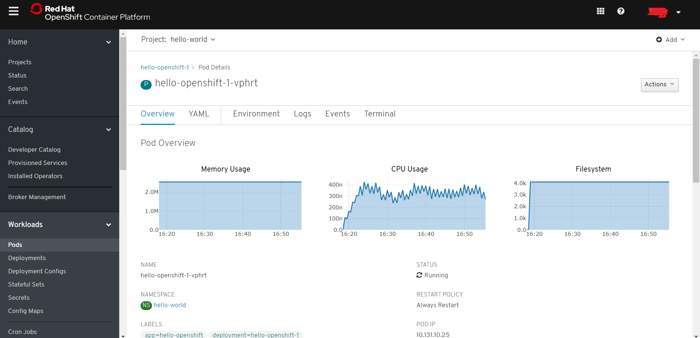图2-10 hello-openshift 容器的详情页面
回到实验的主机上，执行下面的命令就可以访问hello-openshift 容器提供的服务。hello-openshift 中运行着一个简单的用Go 语言编写的应用。其监听在8080 端口，并为所有请求返回字符串Hello Open-Shift！。
[root@311playground-master-1 ~]# curl 10.131.10.25:8080
Hello OpenShift!
如上面的输出所示，容器应用成功返回了Hello OpenShift！ 。这表明，我们的容器应用工作正常。
2.2.4. 一些疑问¶
在实验的主机上，我们通过命令curl 10.131.10.25:8080 成功访问了应用。但是如果在另一台主机上执行相同的命令，就会发现无法访问到这个服务。别着急，这是因为10.131.10.25 是一个内部的IP 地址，只存在于OpenShift 集群当中。OpenShift集群之外的机器将无法识别这个IP 地址。那么，集群外的机器该如何访问我们的容器服务呢？这里先买个关子，在后面的章节里，我们将会慢慢揭晓答案。
至此，我们运行了一个名为hello-openshift的容器镜像。hello-openshift是一个非常简单的容器应用。在hello-openshift的容器启动时会运行一个用Go 语言编写的程序，这个程序将会持续监听在8080 端口，响应任何输入请求并返回字符串“ Hello OpenShift！” 。接下来，我们将部署一个更加复杂且有趣的容器应用，并一起探索OpenShift为部署的容器应用提供了哪些后台支持。
2.3. 完善OpenShift¶
OpenShift 作为一个容器云平台，默认提供了一系列用户开箱即用、一键部署的应用和服务，这些应用和服务的信息也需要在系统中注册，以便用户在类似软件市场（ App Store ）的服务目录中选用。现在让我们一起完善这个OpenShift 实例。
2.3.1. 命令行工具¶
在上一章中，我们使用OpenShift的Web 控制台部署了第一个容器应用。OpenShift的Web 控制台的用户体验非常好，通过图形界面，用户可以高效快速地完成操作。除了Web 控制台外，OpenShift 还提供了一系列命令行工具。
oc是OpenShift中一个重要的命令行客户端。 OpenShift Web 控制台能完成的事情，通过oc 命令也能完成。在进行自动化及重复性的操作时，命令行工具比图形界面更加高效。为了方便读者进行实验操作，本书后续的示例将以命令行进行操作。可以尝试执行oc version 命令查看OpenShift的集群版本信息，测试oc命令是否正常工作。
[root@masteropenshift]# oc version
Client Version: openshift-clients-4.3.0-201910250623-88-g6a937dfe
Server Version: 4.3.0
Kubernetes Version: v1.16.2
可以看到命令输出了OpenShift 及其使用的Kubernetes 的版本信息。因为oc 命令是带有权限管控的，所以在使用oc 命令进行实际的操作前，需要先通过oc login 命令登录。如下例所示，通过oc login 命令，以dev 用户的身份登录。
[root@masteropenshift]# oc login -u dev https://192.168.172.167:8443
error: The server uses a certificate signed by unknown authority. You may need to use the --certificate-authority flag to provide the path to a certificate file for the certificate authority, or --insecure-skip-tls-verify to bypass the certificate check and use insecure connections.
[root@masteropenshift]# oc login -u dev https://192.168.172.167:8443 --insecure-skip-tls-verify
Authentication required for https://192.168.172.167:8443 (openshift)
Username: dev
Password:
Login successful.
You have one project on this server: "hello-world"
Using project "hello-world".
通过oc new-project 命令创建一个新项目hello-world-oc。
[root@masteropenshift]# oc new-project hello-world-oc
Now using project "hello-world-oc" on server "https://192.168.172.167:8443".
You can add applications to this project with the 'new-app' command. For example, try:
oc new-app django-psql-example
to build a new example application in Python. Or use kubectl to deploy a simple Kubernetes application:
kubectl create deployment hello-node --image=gcr.io/hello-minikube-zero-install/hello-node
前文我们通过Web控制台部署了hello-openshift镜像。在命令行可以通过oc new-app命令方便地部署Docker Hub 等Docker 镜像仓库的镜像。
[root@masteropenshift]# oc new-app openshift/hello-openshift
--> Found container image 7af3297 (2 years old) from Docker Hub for "openshift/hello-openshift"
* An image stream tag will be created as "hello-openshift:latest" that will track this image
* This image will be deployed in deployment config "hello-openshift"
* Ports 8080/tcp, 8888/tcp will be load balanced by service "hello-openshift"
* Other containers can access this service through the hostname "hello-openshift"
--> Creating resources ...
imagestream.image.openshift.io "hello-openshift" created
deploymentconfig.apps.openshift.io "hello-openshift" created
service "hello-openshift" created
--> Success
Application is not exposed. You can expose services to the outside world by executing one or more of the commands below:
'oc expose svc/hello-openshift'
Run 'oc status' to view your app.
执行oc get pod 命令可以查看当前项目的容器的列表。和在Kubernetes 一样，在OpenShift中，所有的Docker容器都是被“包裹”在一种称为Pod 的容器内部。用户可以近似地认为Pod 就是我们要运行的Docker 容器本身。
[root@masteropenshift]# oc get pod
NAME READY STATUS RESTARTS AGE
hello-openshift-1-deploy 0/1 Completed 0 62s
hello-openshift-1-n6v7m 1/1 Running 0 46s
执行oc describe pod 命令可以查看Pod 的详细配置和状态信息。下例为Pod hello-openshift-1-8gvli 的详细信息， 包含容器的名称、状态、所处的命名空间（项目）、标签、IP 地址等。
[root@masteropenshift]# oc describe pod hello-openshift-1-n6v7m
Name: hello-openshift-1-n6v7m
Namespace: hello-world-oc
Priority: 0
Node: worker2.walt-43api-1.os.fyre.ibm.com/10.16.58.71
Start Time: Sat, 01 Aug 2020 18:48:25 -0700
Labels: deployment=hello-openshift-1
deploymentconfig=hello-openshift
Annotations: k8s.v1.cni.cncf.io/networks-status:
[{
"name": "openshift-sdn",
"interface": "eth0",
"ips": [
"10.254.15.121"
],
"dns": {},
"default-route": [
"10.254.12.1"
]
}]
openshift.io/deployment-config.latest-version: 1
openshift.io/deployment-config.name: hello-openshift
openshift.io/deployment.name: hello-openshift-1
openshift.io/generated-by: OpenShiftNewApp
openshift.io/scc: restricted
Status: Running
IP: 10.254.15.121
IPs:
IP: 10.254.15.121
Controlled By: ReplicationController/hello-openshift-1
Containers:
hello-openshift:
Container ID: cri-o://f4f0e878ce826fd597f7727ada2585214878b3e509e6038b01ddb8c795a0347e
Image: openshift/hello-openshift@sha256:aaea76ff622d2f8bcb32e538e7b3cd0ef6d291953f3e7c9f556c1ba5baf47e2e
Image ID: docker.io/openshift/hello-openshift@sha256:aaea76ff622d2f8bcb32e538e7b3cd0ef6d291953f3e7c9f556c1ba5baf47e2e
Ports: 8080/TCP, 8888/TCP
Host Ports: 0/TCP, 0/TCP
State: Running
Started: Sat, 01 Aug 2020 18:48:41 -0700
Ready: True
Restart Count: 0
Environment: <none>
Mounts:
/var/run/secrets/kubernetes.io/serviceaccount from default-token-btszs (ro)
......
在后续的介绍中， 我们会使用oc 命令进行大量的操作，相信你很快就会熟悉它的使用方法。
2.3.2. 以集群管理员登录¶
在OpenShift 中，默认的集群管理员是system:admin。system:admin 这个用户拥有最高的权限。有意思的是，和其他用户不同， system:admin 用户并没有密码！ system:admin 的登录依赖于证书密钥。以下是登录的方法。
1 ）拷贝登录配置文件。如果提示文件已存在，请选择覆盖。
[root@masteropenshift]# mkdir -p ~/.kube
[root@masteropenshift]# cp ~/auth/kubeconfig ~/.kube/config
2 ）通过oc login 命令登录。
[root@masteropenshift]# oc login -u system:admin
Logged into "https://192.168.172.167:8443" as "system:admin" using existing credentials.
You have access to 62 projects, the list has been suppressed. You can list all projects with 'oc projects'
Using project "hello-world-oc".
3 ）执行oc whoami 命令，即可见当前登录用户为system:admin 。
[root@masteropenshift]# oc whoami
system:admin
可以尝试执行oc get node 命令查看集群节点信息。只有集群管理员才有权限查看集 群的节点信息。
[root@walt-43api-1-inf auth]# oc get nodes
NAME STATUS ROLES AGE VERSION
master0.walt-43api-1.os.fyre.ibm.com Ready master 155d v1.16.2
可以看到我们的机器中有且只有一个节点master0.walt-43api-1.os.fyre.ibm.com ，它的状态是就绪(Ready）的。在实际的生产环境中，集群中将会有许多节点，这会是一个庞大的列表。
2.3.3. 添加Router (Openshift 4不适用)¶
首先，为集群添加一个Router 组件。Router 是OpenShift集群中一个重要的组件，它是外界访问集群内容器应用的入口。集群外部的请求都会到达Router ，并由Router 分发到具体的容器中。关于Router 的详细信息我们会在后续的章节详细探讨。
切换到default 项目。
[root@master ~]# oc project default
Router 组件需要读取集群的信息，因此它关联一个系统账号Service Account ，并为这个账号赋权。Service Account 是OpenShift专门供程序和组件使用的账号。OpenShift中有严格的权限和安全保障机制。不同的用户会关联到不同的安全上下文（ Security Context Constraint, SCC ） 。同时，用户或组也会关联到不同的系统角色（ Role ） 。
[root@master ~]# oc adm policy add-scc-to-user privileged system:serviceaccount:default:router
执行oa adm router 命令创建Router 实例。
[root@master ~]# oc adm router router --replicas=l --service-account=router
info: password for stats user admin has been set to EhEVZXbjAn
--> Creating router router ...
serviceaccount "router" created
clusterrolebinding "router-router-role" created
deploymentconfig "router" created
service "router" created
--> Success
oc adm命令是面向集群管理员，可以进行集群的管理和配置。在上面的命令中，我们指定创建一个名为router的Router 。
参数–replicas=l 表明，我们只想创建一个实例。在实际的生产中，为了达到高可用的效果，可以创建多个Router 实例实现负载均衡并防止单点失效。
执行片刻之后，通过oc get pod -n default 命令可以查看Router 容器的状态。
[root@master ~]# oc get pod -n defaul t
NAME READY STATUS RESTARTS AGE
router-1-e95qa 1/1 Running 0 3m
上面的输出显示Router 容器的状态是Running 。如果此时检查实验主机上的端口监听状态，可以发现主机的端口80 、443 正在被Haproxy 监听。
[root@master ~]# ss -ltn|egrep -w "80|443"
LISTEN 0 128 *:443 *:*
LISTEN 0 128 *:80 *:*
其实，从技术上来说， Router 就是一个运行在容器中的Haproxy ，当然这个Haproxy 经过了特别的配置来实现特殊的功能。这些我们在后面再详细讨论。
至此， Router 组件部署就已经完成了。
2.3.4. 添加Registry (Openshift 4不适用)¶
接下来部署集群内部的Docker Registry，即内部的Docker 镜像仓库。从功能上说， OpenShift的内部的镜像仓库和外部的企业镜像仓库或者Docker Hub 没有本质的区别。只是这个内部的镜像仓库会用来存放－些“特殊的”镜像，这些镜像是由一个叫Source to Image ( S2I ）流程产生的。简单地说， S2I 的工作是辅助将应用的源代码转换成可以部署的Docker 镜像。关于S2I， 后续再详细介绍。
1 ） 切换到default 项目。
[root@master ~]# oc project default
2 ） 执行如下命令部署Registry。
[root@master ~]# oc adm registry --config=/etc/origin/master/admin.kubeconfig --service-account=registry
--> Creating registry registry ...
serviceaccount "registry" created
clusterrolebinding "registry-registry-role" created
deploymentconfig "docker-registry" created
service "docker-registry" created
--> Success
3 ） 稍候片刻， 执行oc get pod 便可见Registry 容器处于运行状态了。
[root@master ~]# oc get pod
NAME READY STATUS RESTARTS AGE
docker-registry-1-xm3u 1/1 Running 0 lm
router-1-e95qa 1/1 Running 0 9m
在本例中，因为我们部署的Registry没有启用HTTPS ，所以需要修改Docker 的配置让Docker 以非HTTPS 的方式连接到Registry。修改/etc/sysconfig/docker 文件，为OPTIONS 变量值追加–insecure-registry=https://172.30.0.0/16 。修改后的变量值如下：
OPTIONS='--selinux-enabled --log-driver=journald --registry-mirror=https://docker.mirrors.ustc.edu.cn --insecure-registry=l72.30.0.0/16'
4 ）重启Docker 服务，使修改的配置生效。
[root@master opt]# systemctl restart docker
至此， Registry 组件部署完成。
2.3.5. 添加Image Stream¶
Image Stream 是一组镜像的集合。可以在一个Image Stream 中定义一些名称及标签( tag ） ，并定义这些名字及标签指向的具体镜像。值得指出的是，在OpenShift上部署容器应用，并不一定要用到Image Stream ，直接指定镜像的地址也可以完成部署。使用Image Stream 为的是方便地将一组相关联的镜像进行整合管理和使用。OpenShift默认为用户定义了一系列开箱即用的Image Stream 。
1 ） 切换到openshift 项目。
[root@master ~]# oc project openshift
Now using project "openshift" on server "https://192.168.172.167:8443".
2 ） 通过以下命令可以导人Image Stream 。
[root@311playground-master-1 ~]# curl https://raw.githubusercontent.com/openshift/origin/master/examples/image-streams/image-streams-rhel7.json |oc create -f - -n openshift
% Total % Received % Xferd Average Speed Time Time Time Current
Dload Upload Total Spent Left Speed
100 61797 100 61797 0 0 98892 0 --:--:-- --:--:-- --:--:-- 98875
imagestream.image.openshift.io/dotnet created
imagestream.image.openshift.io/httpd created
imagestream.image.openshift.io/jenkins created
imagestream.image.openshift.io/mariadb created
imagestream.image.openshift.io/mongodb created
imagestream.image.openshift.io/mysql created
imagestream.image.openshift.io/nginx created
imagestream.image.openshift.io/nodejs created
imagestream.image.openshift.io/perl created
imagestream.image.openshift.io/php created
imagestream.image.openshift.io/postgresql created
imagestream.image.openshift.io/python created
imagestream.image.openshift.io/redis created
imagestream.image.openshift.io/ruby created
3 ） 通过oc get is -n openshift 命令，可以列出刚才导人的Image Stream 对象。
[root@master ~]# oc get is -n openshift
NAME DOCKER REPO TAGS UPDATED
db2u docker-registry.default.svc:5000/rhos/db2u 11.5.2.0-875-x86_64 2 months ago
db2u.auxiliary.auth docker-registry.default.svc:5000/rhos/db2u.auxiliary.auth 11.5.2.0-875-x86_64 2 months ago
db2u.instdb docker-registry.default.svc:5000/rhos/db2u.instdb 11.5.2.0-875-x86_64 2 months ago
db2u.tools docker-registry.default.svc:5000/rhos/db2u.tools 11.5.2.0-875-x86_64 2 months ago
dotnet docker-registry.default.svc:5000/rhos/dotnet 1.0,1.1,2.0 + 2 more...
etcd docker-registry.default.svc:5000/rhos/etcd 3.3.10-875-x86_64 2 months ago
httpd docker-registry.default.svc:5000/rhos/httpd 2.4
jenkins docker-registry.default.svc:5000/rhos/jenkins 2
mariadb docker-registry.default.svc:5000/rhos/mariadb 10.1,10.2
mongodb docker-registry.default.svc:5000/rhos/mongodb 2.6,3.2,3.4 + 2 more...
mysql docker-registry.default.svc:5000/rhos/mysql 5.5,5.6,5.7
nginx docker-registry.default.svc:5000/rhos/nginx 1.10,1.12,1.8
nodejs docker-registry.default.svc:5000/rhos/nodejs 4,6,8 + 3 more...
perl docker-registry.default.svc:5000/rhos/perl 5.20,5.24,5.26 + 1 more...
php docker-registry.default.svc:5000/rhos/php 7.0,7.1,5.5 + 1 more...
postgresql docker-registry.default.svc:5000/rhos/postgresql 9.5,9.6,10 + 2 more...
python docker-registry.default.svc:5000/rhos/python 2.7,3.3,3.4 + 2 more...
redis docker-registry.default.svc:5000/rhos/redis 3.2
ruby docker-registry.default.svc:5000/rhos/ruby 2.2,2.3,2.4 + 2 more...
此时，如果访问OpenShift的Web 控制台，进入Hello World 项目，单击项目Overview页面顶部的Add to project 按钮，则会看见一系列可用的镜像被罗列在页面上，如图2-11 所示。
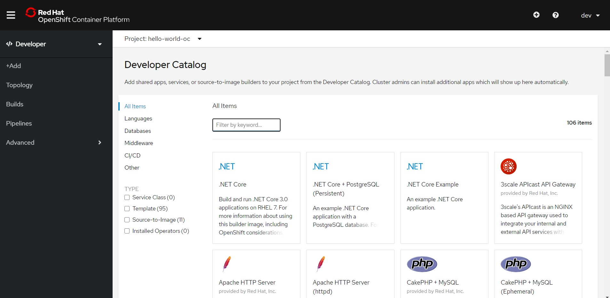图2-11 导人Image Stream 后Web 界面展示可用的镜像列表
2.3.6. 添加Template¶
部署容器应用，可以很简单： 直接通过docker run 或oc new-app 命令即可完成。但是有时候它也可以是一项很复杂的任务。在现实中，企业的应用往往不是孤立存在的，应用往往有多个模块；部署需要满足外部的依赖；用户需要根据实际的需求，结合环境的配置给部署传递不同的参数。为了满足用户对复杂应用部署的需求，提高应用部署的效率，OpenShift引入了应用部署模板 Template ）的概念。通过Template ，用户可以定义一个或多个需要部署的镜像，定义部署依赖的对象，定义可供用户输入配置的参数项。OpenShift 默认提供了一些示例的Template 供用户使用。后续用户可以根据实际的需求，定义满足企业需求的应用部署模板，构建企业内部的软件市场。
1 ）切换到openshift 项目。
[root@master ~]# oc project openshift
Now using project "openshift" on server "https://192.168.172.167:8443".
2 ）下载并创建一个CakePHP 示例应用的Template 。通过这个Template ，用户可以在服务目录单击相关的条目一键部署一个CakePHP 应用和一个MySQL 数据库。
[root@master ~]# oc create -f https://raw.githubusercontent.com/openshift/origin/master/examples/quickstarts/cakephp-mysql.json -n openshift
template "cakephp mysql example" created
3 ）创建完毕后，可以通过oc get template -n openshift 命令查看导人的模板信息。
[root@rnaster ~]# oc get template -n openshift
NAME DESCRIPTION PARAMETERS OBJECTS
cakephp-mysql-example An example CakePHP application with a MySQL database. For more information ab... 19 (4 blank) 8
如果要查看模板的详细内容，可以通过oc get template cakephp-mysql-example -o json -n openshift 命令查看。-o 参数指定了命令以json 格式输出返回值。
oc get template cakephp-mysql-example -o json -n openshift
刷新OpenShift Web 控制台的服务目录界面，在过滤器中输入cake ，即可看到刚导人的应用模板，如图2-12 所示。
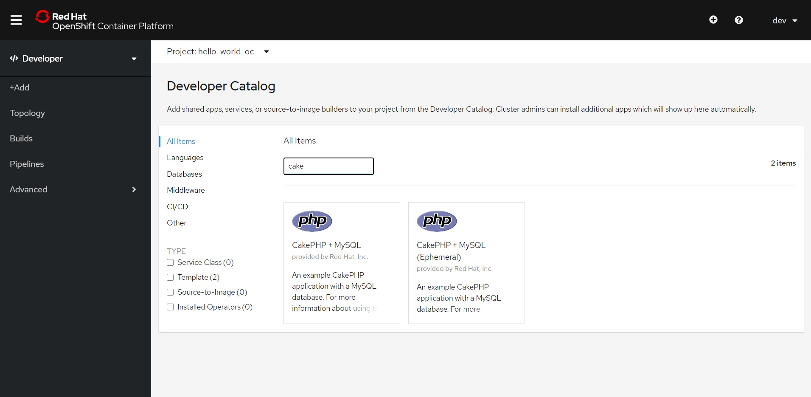图2-12 导人的CakePHP 应用模板显示在Web 控制台
在OpenShift的GitHub 仓库中还有许多预定义好的Template 示例。你可以按需下载，并通过oc create -f 命令导人系统中。
请执行下面的命令导入wildfly-basic-s2i 模板，这在后面的章节会使用到。
oc create -f https://raw.githubusercontent.com/nichochen/openshift-book-source/master/template/wildfly-basic-s2i.template.json -n openshift
2.4. 部署应用¶
在前几节中，我们完成了众多关键组件的部署。现在是时候尝试部署一些应用了。本节我们将部署一个CakePHP 应用及MySQL 数据库。
1 ）登录Openshift Web 控制台。单击New project 按钮。创建一个名为hello-world-php的项目。输入项目名称hello-world-php 及项目显示名Hello World PHP 。单击Create 按钮创建项目，如图2-13 所示。
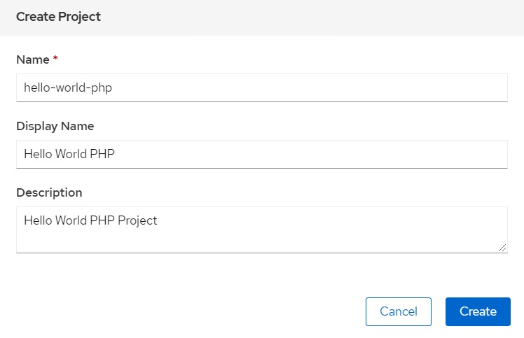图2-13 创建hello-world-php项目
2 ）点击Browser Catalog按钮， 在服务目录的过滤器中输入cake ，找到CakePHP + MySQL (Ephemeral) 模板，并选中它，如图2-14所示。
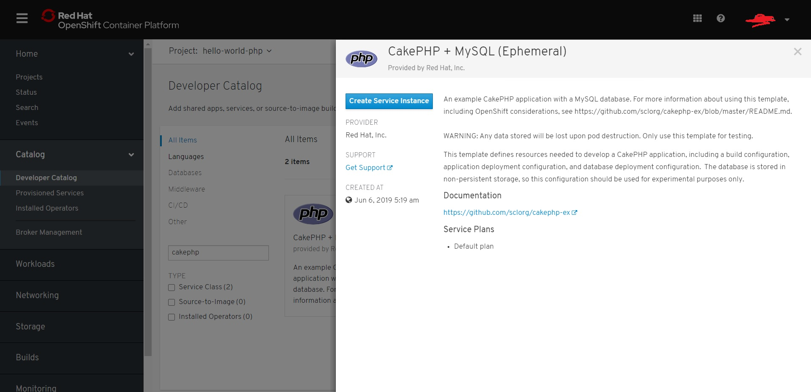图2-14 选取cakephp-mysql-example模板
3 ）选取Template后将跳转至Template的参数输入页面, 单击模板参数输入页面底部的Create 按钮，执行部署，如图2-16 所示。
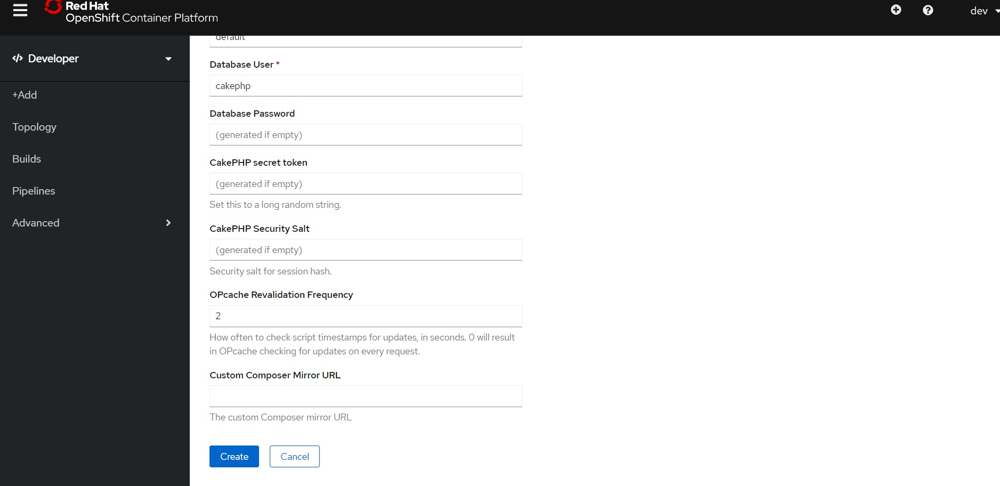图2-16 执行实例化Template
4 ）执行部署后，浏览器将跳转至部署完成页面，如图2-17 所示。
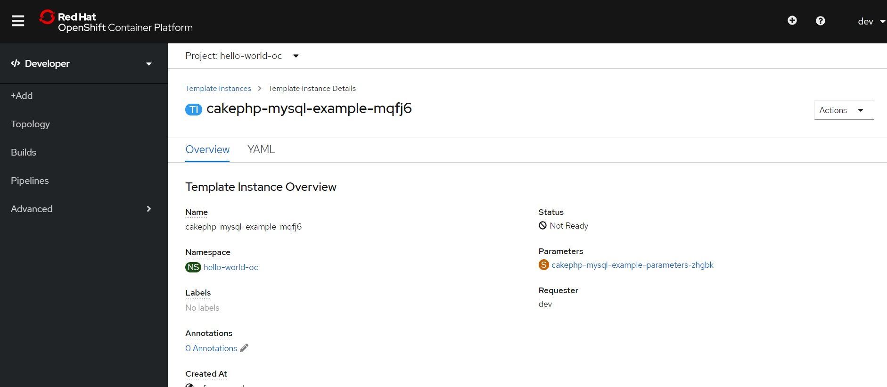图2-17 部署完成页面
5 ）稍等片刻后，在CakePHP 的构建日志界面，可以看到镜像构建的实时日志输出，如图2-19 所示。从日志中可以看到， OpenShift 会从GitHub 仓库中下载指定的PHP 源代码，然后将代码注入一个含PHP 运行环境的镜像， 最终生成一个包含PHP 应用及PHP 运行环境的新镜像，并将新的镜像推送到前文部署的内部镜像仓库。
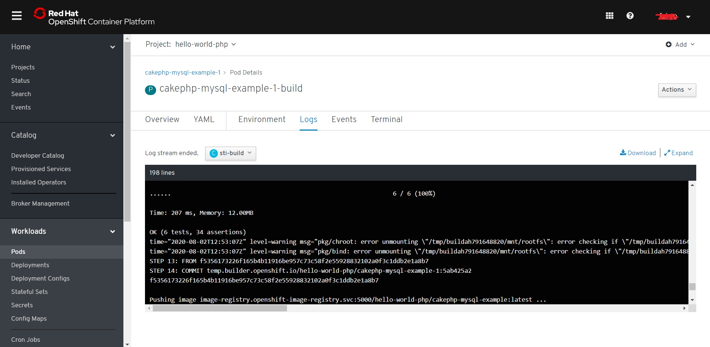图2-19 CakePHP 应用的S2I 构建日志
像仓库是否正确部署与配置。第一次推送镜像的时间会比较长， 因为此时镜像仓库中还没有相应的镜像层（ Layer ） 。后续构建的镜像推送时间将会大大加快，因为大量可以重用的镜像层已经存在于内部的镜像仓库中了。
6 ）构建完成后，单击左侧菜单栏的Status按钮，回到项目主页，如图2-20 所示。此时可见CakePHP 应用已经启动完毕。
图2-20 项目主页
7 ）单击左侧菜单栏的Networking下的Routes按钮， 进入Routes页面， 如果2-21 所示。点击 cakephp-mysql-example的Location link，即打开容器应用， 如果2-22所示。
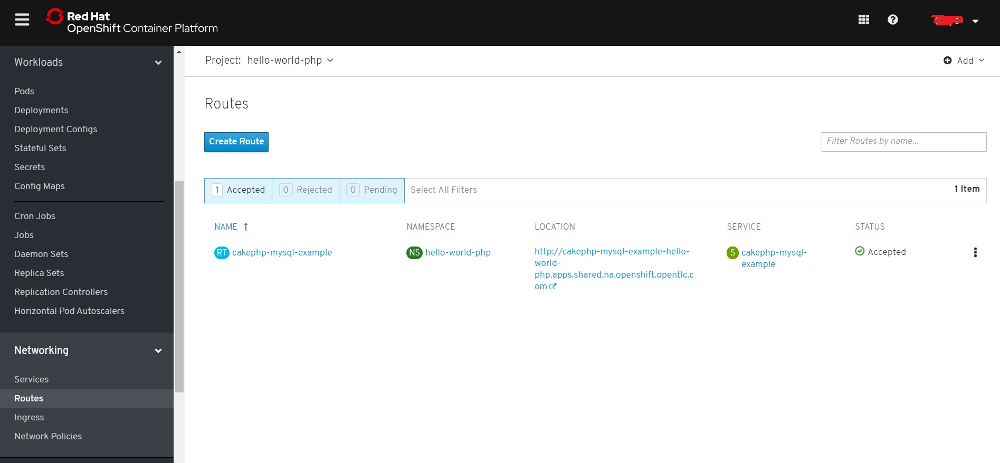图2-21 Routes页面
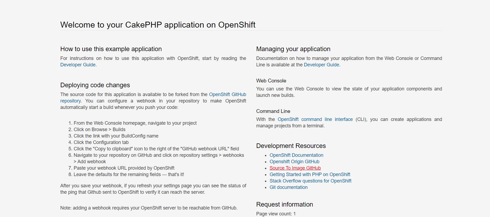图2-22 CakePHP 应用页面
在这个应用部署的例子中，我们通过选择一个预定义的应用部署模板，快速部署了一个CakePHP 应用及一个MySQL 数据库。整个部署的过程，不外乎几次鼠标单击。在实际的使用中，企业可以在服务目录中加入各种不同的应用服务模板，构建出企业内部软件市场式的服务目录。用户或管理员可以通过服务目录选取需要部署的软件应用模板，输入相应的参数，然后执行部署，相关的应用服务便会以容器的方式运行在指定的服务器集群上。这些应用服务可以是一个单体的应用，也可以包含多个不同的组件，如前文部署的示例，包含了一个前端PHP 应用及一个后端MySQL 数据库。通过软件市场式的服务目录，即使对OpenShift没有太多了解的用户，也能快速部署复杂的应用。作为一个容器云平台， OpenShift极大地提升了应用部署的效率，使得应用部署实现自动化及标准化。
2.5. 本章小节¶
通过本章，我们成功安装及运行了Openshift集群，并完成了对OpenShift 集群的完善和升级，增加了Router 及Registry 组件；丰富了OpenShift 平台上可供用户选择的应用和服务；通过服务目录，快速部署了一个带有前端PHP 应用及后端数据库的应用。通过本章的探索，相信你对OpenShift 的了解更上了一个层次。